1945년(을유년) 12월 1일
광복의 감격과 의의를 기리며 ‘출판은 곧 건국 사업’이라는
사명감으로 첫발을 내디딘 을유문화사는 한국
현대사와 궤軌를 같이하며 한국 출판의 기틀을 다져 왔습니다.
현대사와 궤軌를 같이하며
한국 출판의 기틀을 다져 왔습니다.
을유 책
을유문화사에서
발간한 도서목록입니다.
- 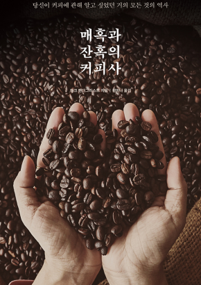 매혹과 잔혹의 커피사 “커피 애호가라면 반드시 읽어야 할 책” 우리 시대의 가장 매혹적인 물질인 커피에 관한 결정판 마크 펜더그라스트 ,정미나
- 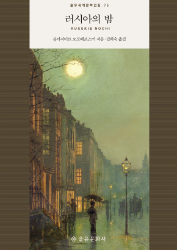 러시아의 밤 파우스트와 그의 동료들이 서구의 문명과 역사를 체스 말처럼 다루며 토론하는 산업혁명기의 천일야화 블라지미르 오도예프스키 ,김희숙
- 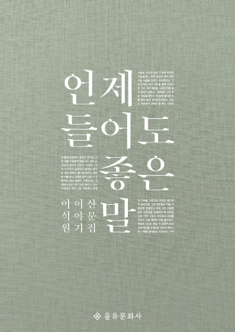 언제 들어도 좋은 말 파우스트와 그의 동료들이 서구의 문명과 역사를 체스 말처럼 다루며 토론하는 산업혁명기의 천일야화 블라지미르 오도예프스키 ,김희숙
- 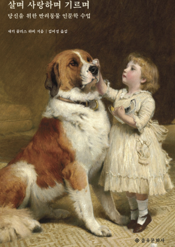 살며 사랑하며 기르며 인간은 어떻게 동물을 반려하게 되었고, 또 어쩌다 그들을 사랑하게 되었을까. 왜 그들에게 이름을 붙이려 하고, 가족의 일부로 여길까. 재키 콜리스 하비 ,김미정
- 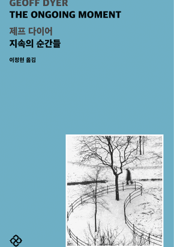 지속의 순간들 리듬감은 반복되는 피사체 때문에 생기고, 반복되는 피사체는 이 책의 핵심이기 때문이다.우리는 반복되는 것들을 만난다. 재키 콜리스 하비 ,김미정
을유인터뷰
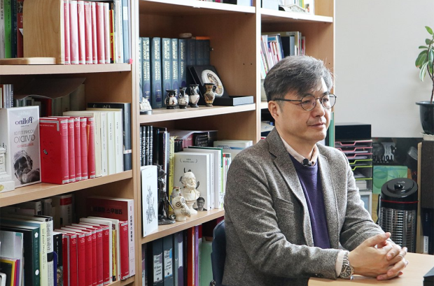
『김헌의 그리스 로마 신화』 저자
서양고전학자 김헌
개인적으로도 그리스·로마 신화는 참 재미있습니다. 황당무계하고, 기발하고, 상상력이 풍부한 이야기들이 많아서 복잡하고 힘들 때 읽으면 그 시간을 재미있게 보낼 수 있습니다. 또 단순히 재미로만 그치는 것이 아니라, 이야기의 의미를 잘 새기다 보면 내가 부딪히는 개인적인 문제나 사회 문제에 대한 적절한 답을 찾는 경우가 있습니다.
자세히보기 keyboard_arrow_right을유 소식
-
 『인생, 예술』 윤혜정 작가 소전서림 북토크
『인생, 예술』 윤혜정 작가 북토크가 소전서림에서 진행됩니다. 『보그』 『바자』 에디터, 현 국제갤러리 디렉터 윤혜정 작가의 이야기를 통해 책에 소개된 예술가와 작품에 대한 풍성한 이야기를 만나 보세요. 많은 관심 부탁드립니다.
『인생, 예술』 윤혜정 작가 소전서림 북토크
『인생, 예술』 윤혜정 작가 북토크가 소전서림에서 진행됩니다. 『보그』 『바자』 에디터, 현 국제갤러리 디렉터 윤혜정 작가의 이야기를 통해 책에 소개된 예술가와 작품에 대한 풍성한 이야기를 만나 보세요. 많은 관심 부탁드립니다.
- 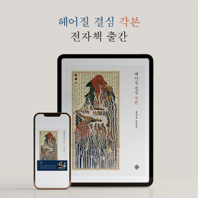 『헤어질 결심 각본』 전자책이 출간되었습니다 영화 각본이 선사하는 즐거움 중 하나는 촬영과 편집을 마친 최종 결과물과의 차이를 발견하는 것이다. 『헤어질 결심 각본』은 특히 이런 발견의 즐거움을 풍부하게 담고 있다.
-
 『세계정치론 8판(국제 3판)』이 8월 25일 출간됩니다.
1997년 초판이 출간된 이후 국제정치학에서 가장 정통성을 인정받은 『세계정치론 8판(국제 3판)』이 8월 중 출간됩니다.
『세계정치론 8판(국제 3판)』이 8월 25일 출간됩니다.
1997년 초판이 출간된 이후 국제정치학에서 가장 정통성을 인정받은 『세계정치론 8판(국제 3판)』이 8월 중 출간됩니다.
- 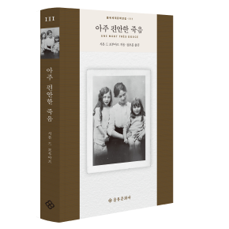 한국출판문화산업진흥원 4월 추천도서 『아주 편안한 죽음』이 선정되었습니다. 『아주 편안한 죽음』은 시몬 드 보부아르가 어머니의 죽음을 경험한 내용을 바탕으로 써 내려간 자전 소설이다.
- 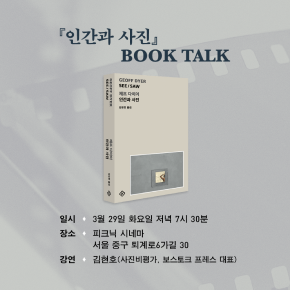 『인간과 사진』 북토크 (강연 : 보스토크 프레스 김현호 대표) 따뜻한 봄날, 제프 다이어 신작 『인간과 사진』 북토크가 피크닉에서 열립니다. 보스토크 프레스 대표 김현호 사진비평가가 책과 사진에 대한 이야기를 전해주실 예정입니다.
- 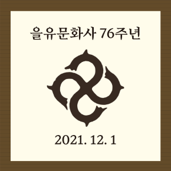 2021년 12월 1일은 을유문화사 76주년 창립 기념일입니다. 1945년(을유년) 12월 1일, 광복의 감격과 의의를 기리며 ‘출판은 곧 건국 사업’이라는 사명감으로 첫발을 내디딘 을유문화사는 한국 현대사와 궤軌를 같이하며 한국 출판의 기틀을 다져 왔습니다. 『보그』 『바자』 에디터, 현 국제갤러리 디렉터 윤혜정 작가의 이야기를 통해 책에 소개된 예술가와 작품에 대한 풍성한 이야기를 만나 보세요. 많은 관심 부탁드립니다.
- 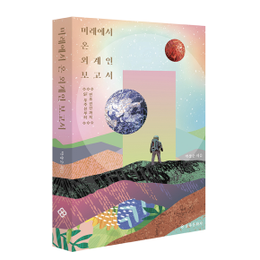 『미래에서 온 외계인 보고서』 올해의 청소년 교양도서 선정 SF를 통해 미래 과학에 얽힌 흥미로운 이야기들을 알기 쉽게 풀어낸 『미래에서 온 외계인 보고서』가 을유문화사에서 출간되었다.
- 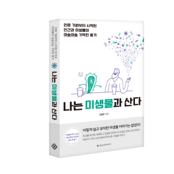 『나는 미생물과 산다』 2018 세종도서 교양부문 선정 인간은 미생물 없이 단 1초도 살아갈 수 없는 존재다. 우리 몸은 약 100조 개의 세포와 함께 약 1000조에 달하는 미생물 세포를 가지고 있기 때문이다. 그러니 우리는 싫든 좋든 미생물 세계 안에서 살아가야 한다.
- 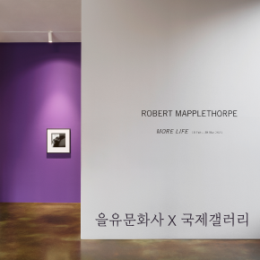 [을유문화사 X 국제갤러리] 메이플소프 사진전 인스타그램 이벤트 국제갤러리에서 2월 18일부터 3월 28일까지 메이플소프 사진전 《Robert Mapplethorpe: More Life》이 전시됩니다. 을유문화사 현대 예술의 거장 시리즈에서도 소개된 메이플소프는 그 누구보다 탐미적인 작품을 완성한 사진작가로 알려져 있습니다.
- 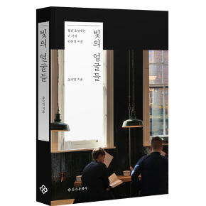 네이버 디자인프레스에 『빛의 얼굴들』 조수민 작가의 인터뷰가 소개되었습니다. 네이버 디자인판 '디자인 피플'에 『빛의 얼굴들』 저자이자 조명 디자이너 조수민 작가의 인터뷰가 업로드되었습니다. 책에 대한 이야기부터, 연말연시에 만날 수 있는 빛의 아름다운 순간들이 소개되었습니다.